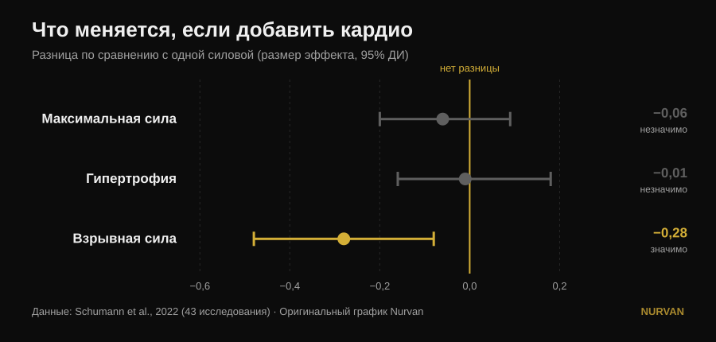
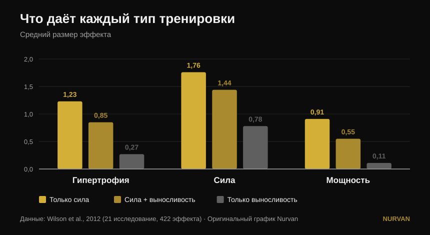

Тренировать всё сразу или специализироваться на одном?
Популярный пост утверждает, что специализация на одном физическом качестве даёт худший результат и что в любой программе должны быть сразу шесть качеств: мощность, сила, гипертрофия, выносливость, подвижность и атлетизм. Под постом трое разных читателей спрашивают одно и то же: а где исследование? Его нет. Вот источники — и они рассказывают более точную историю, в которой одно из шести качеств действительно страдает, но не то, которое вы ожидаете.

Коротко
- Добавленная аэробная работа не стоит вам ни максимальной силы, ни мышечной массы. В 43 исследованиях разница с теми, кто занимался только с железом, практически нулевая: −0,06 по максимальной силе и −0,01 по гипертрофии, оба показателя незначимы (Schumann et al., 2022).
- А вот мощность она отнимает. Взрывная сила снижается статистически значимо (−0,28, p = 0,007). Это единственное качество из списка поста, которое платит реальную цену.
- И цена зависит от расписания, а не от мотивации. Падение мощности выражено, когда железо и кардио стоят в одной тренировке, и исчезает, когда их разделяют хотя бы 3 часа (Schumann et al., 2022).
- Это работает не для всех одинаково. Интерференция по силе ног проявляется у мужчин (−0,43) и не проявляется у женщин (0,08), различие между группами значимо (Huiberts et al., 2024).
- Правильный вопрос — не «всё сразу или по очереди». Сила и масса сохраняются до 32 недель при одной тренировке в неделю и одном подходе на упражнение, если относительная нагрузка остаётся высокой (Spiering et al., 2021). Одно качество продвигаем, остальные держим на минимуме.
Дилемма поставлена неверно
Мысль поста проста: тренировать по одному качеству за раз — это «минимальный и узкий» прогресс, тренировать всё вместе — больший. Интуиция симпатичная, но ни одно исследование никогда не сравнивало напрямую специализированную программу с мультимодальной, суммируя итоги. Литература сравнивает другое, куда более полезное: что происходит с силой, массой и мощностью, когда к одинаковой силовой программе добавляют аэробную работу.
На этот вопрос есть надёжный ответ, построенный на 43 контролируемых исследованиях, где силовая программа у групп была идентичной и менялось только добавление выносливости (Schumann et al., 2022):

Два интервала из трёх пересекают ноль: по максимальной силе и по гипертрофии кардио не отнимает ничего. Третий — нет. Взрывная сила — прыжок, бросок, ускорение — действительно снижается.
Обзор 2026 года, объединивший семнадцать метаанализов, приходит к тому же с другой стороны: кто тренирует силу и выносливость вместе, получает больше аэробных возможностей, чем те, кто занимается только с железом (0,77, p = 0,02), и сопоставимые, а не лучшие результаты по силе, мощности и гипертрофии (Held et al., 2026). Те же авторы предупреждают: данных по элитным спортсменам мало — а ведь именно там специализация весит больше всего, и именно там науке есть что сказать меньше всего.
Что на самом деле говорят исследования
«Специализация на одном качестве даёт худший результат» — Требует уточнения
Исследования показывают равенство, а не превосходство одного над другим. Тот, кто добавляет кардио, не получает больше силы или массы, чем тот, кто сосредоточен только на железе: он получает столько же плюс аэробные возможности в подарок. Это отличный аргумент против страха перед кондиционной работой. Но это не аргумент против того, кто на один блок решил продвигать что-то одно.
«Тренируя всё вместе, получаешь больше» — Требует уточнения
Больше по числу качеств, а не больше в каждом. Общий охват расширяется, отдельные результаты остаются теми же. Эта разница важна, когда впереди соревнование, весовая категория или срок.
«Кондиционная работа ничего не стоит» — Опровергнуто, для мощности
Здесь пост промахивается, и промахивается ровно по тому качеству, которое ставит на первое место. Взрывная сила платит: −0,28, доверительный интервал не касается нуля (Schumann et al., 2022). Самое интересное — почему: падение выражено, когда обе части стоят в одной тренировке (p = 0,043), и больше не проявляется, если их разделяют хотя бы три часа. Это не биологическая неизбежность, а вопрос расписания.
Более старая и более подробная картина говорит то же самое «сырыми» размерами эффекта (Wilson et al., 2012):

В той же работе видны два модератора, которых пост не называет: бег снижает гипертрофию и силу, велосипед — нет, а величина интерференции растёт с частотой аэробных занятий (корреляции от −0,26 до −0,35) и особенно с их продолжительностью (от −0,29 до −0,75). Дело не в «кардио», а в том, сколько, какого вида и когда.
«Это касается всех» — Требует уточнения
Один из комментаторов под постом спрашивает, где результаты по женщинам. Отличный вопрос, и ответ есть. По 59 исследованиям и 1346 участникам интерференция по силе ног проявляется у мужчин (−0,43) и не проявляется у женщин (0,08), различие между группами статистически значимо (p = 0,03). По силе верха тела, мощности и максимальному потреблению кислорода различий между полами нет (Huiberts et al., 2024).
«Подвижность — отдельный обязательный блок» — Требует уточнения
Если тренировать силу в полной амплитуде, часть работы над подвижностью уже сделана. По 11 контролируемым исследованиям и 452 участникам силовая тренировка и растяжка не различаются по приросту амплитуды (−0,22, p = 0,206), и это держится во всех проанализированных подгруппах (Afonso et al., 2021). Авторы подчёркивают высокую разнородность исследований, так что это не разрешение бросить растяжку при конкретном ограничении — но одна из шести клеток частично заполняется сама.
«По одному качеству за раз — минимальный прогресс» — Опровергнуто в обратную сторону
Чередовать акцент во времени — не недостаток, а определение периодизации, и для максимальной силы она работает лучше, чем её отсутствие. При выровненном объёме, по 35 исследованиям, периодизированные программы превосходят непериодизированные в 1ПМ (0,31, p = 0,02), тогда как по гипертрофии не меняется ничего (0,13, p = 0,27). А между линейной и волновой периодизацией преимущество волновой в 1ПМ есть только у тренированных (0,61) и исчезает у новичков (0,06) (Moesgaard et al., 2022).
Перевод: если нужна масса, порядок почти не важен и можно делать всё вместе без сожалений. Если нужен максимум, нужна организация во времени — а «всегда всё сразу» организацией не является.
Вопрос, который пост не задаёт
У дилеммы «шесть качеств вместе или по одному» есть третий член, которого не называет ни одна из сторон: как мало нужно, чтобы не потерять уже построенное. Ответ собирали исследование за исследованием, и он удивительно мал (Spiering et al., 2021):
| Качество | Минимальная доза для поддержания | Как долго | Условие |
|---|---|---|---|
| Сила и масса (до 40 лет) | 1 тренировка в неделю, 1 подход на упражнение | до 32 недель | относительная нагрузка остаётся высокой |
| Мышечная масса (пожилой возраст) | 2 тренировки в неделю, 2-3 подхода | — | относительная нагрузка остаётся высокой |
| Аэробные возможности | 2 занятия в неделю или объём, урезанный на 33-66% (даже 13-26 минут) | до 15 недель | рабочий пульс остаётся высоким |
Переменная, которую нельзя урезать, всегда одна и та же: интенсивность. Объём и частоту можно снижать очень сильно, вес или темп — нет.
Это меняет весь разговор. Вы не выбираете между шестью плохо тренированными качествами и одним хорошо тренированным. Вы продвигаете одно качество шесть-восемь недель, а остальные ставите в режим поддержания — одна тренировка или один подход. Именно так тренеры строят разностороннего атлета, не сжигая его, и это ровно та середина, которую пост объявляет невозможной.
Как это применить
- Выберите один приоритет на ближайшие 6-8 недель. Один: максимум, масса или кондиция. Остальное не бросаем, а замедляем.
- Остальное держите на минимальной дозе. Одной тренировки в неделю с парой тяжёлых подходов хватает, чтобы месяцами сохранять силу и массу (Spiering et al., 2021). Важно, чтобы вес оставался близким к рабочему, а не чтобы объём оставался большим.
- Разводите железо и кондицию минимум на 3 часа или по разным дням, если вам важна мощность (Schumann et al., 2022). Если объединять приходится, ставьте железо первым: такова тенденция в самом свежем обзоре (Held et al., 2026).
- Выбирайте вид кардио. Велосипед не мешает, бег мешает — особенно долгий и частый (Wilson et al., 2012). Если бегать нужно, а ноги всё же хочется построить, держите пробежки короткими.
- Не записывайте подвижность в отдельный блок по умолчанию. Тренируйте силу в полной амплитуде и добавляйте точечную работу только там, где есть реальное ограничение (Afonso et al., 2021). Наш разбор как выбирать подходы и повторения поможет собрать силовую часть.
- Измеряйте, а не угадывайте. Интерференцию не чувствуют — её видят в цифрах. Если после четырёх недель кондиционной работы прыжок или скорость штанги просели, а рабочие веса держатся, вы нашли ровно ту цену, о которой пишут исследования.
💡 С Nurvan
Тренировать несколько качеств сразу имеет смысл, только если видно, какое из них проседает. В Nurvan разные программы и дисциплины живут в одном дневнике — сила, гипертрофия, functional, HYROX — с весом, повторениями и RIR, записанными подход за подходом, и с историей всегда рядом для сравнения. Так «режим поддержания» становится тем, что вы действительно проверяете, а не тем, на что надеетесь: если максимум падает, пока кондиция растёт, вы заметите это через две недели, а не через два месяца.
Частые вопросы
Кардио «съедает» мышцы?
Нет. По 43 контролируемым исследованиям добавление аэробной работы к идентичной силовой программе не меняет ни гипертрофию (−0,01, p = 0,919), ни максимальную силу (−0,06, p = 0,446) (Schumann et al., 2022). Страдает только взрывная сила.
Кардио и силовую в один день или в разные?
Если важна мощность — разводите: падение взрывной силы выражено, когда обе части в одной тренировке, и больше не проявляется при интервале хотя бы в три часа (Schumann et al., 2022). Если важны только сила и масса, расписание значит гораздо меньше.
Сколько нужно тренироваться, чтобы не растерять набранную силу?
У взрослых до 40 лет одна тренировка в неделю с одним подходом на упражнение сохраняла силу и массу до 32 недель при условии, что относительная нагрузка оставалась высокой (Spiering et al., 2021). Режут объём, но не интенсивность.
Обязательно ли тренировать шесть качеств, как говорит пост?
Нет источника, который устанавливал бы обязательное число качеств или доказывал «синергию» между ними. Источники показывают другое: несколько качеств можно тренировать вместе, не теряя ни силы, ни массы, а те, которые вы сейчас не продвигаете, сохраняются очень малой работой. Правильное число зависит от вашей цели, а не от правила.
Читайте также
- Сплит: новичок и продвинутый — в чём разница
- Сколько повторений нужно для роста мышц: миф 8-12
- Разгибания ног или жим ногами: что растёт
Источники
- Schumann M, Feuerbacher JF, Sünkeler M, Freitag N, Rønnestad BR, Doma K, Lundberg TR, 2022. Compatibility of Concurrent Aerobic and Strength Training for Skeletal Muscle Size and Function: An Updated Systematic Review and Meta-Analysis. Sports Med 52(3):601–612. PMID 34757594 — doi:10.1007/s40279-021-01587-7
- Held S, Wolf L, Rappelt L, Bloch W, Donath L, Micke F, Geisler S, Isenmann E, 2026. Maximizing Adaptations in Concurrent Training: An Umbrella Review of Meta-analyses. Sports Med 56(6):1489–1512. PMID 41762427 — doi:10.1007/s40279-026-02401-y
- Wilson JM, Marin PJ, Rhea MR, Wilson SMC, Loenneke JP, Anderson JC, 2012. Concurrent training: a meta-analysis examining interference of aerobic and resistance exercises. J Strength Cond Res 26(8):2293–2307. PMID 22002517 — doi:10.1519/JSC.0b013e31823a3e2d
- Huiberts RO, Wüst RCI, van der Zwaard S, 2024. Concurrent Strength and Endurance Training: A Systematic Review and Meta-Analysis on the Impact of Sex and Training Status. Sports Med 54(2):485–503. PMID 37847373 — doi:10.1007/s40279-023-01943-9
- Spiering BA, Mujika I, Sharp MA, Foulis SA, 2021. Maintaining Physical Performance: The Minimal Dose of Exercise Needed to Preserve Endurance and Strength Over Time. J Strength Cond Res 35(5):1449–1458. PMID 33629972 — doi:10.1519/JSC.0000000000003964
- Moesgaard L, Beck MM, Christiansen L, Aagaard P, Lundbye-Jensen J, 2022. Effects of Periodization on Strength and Muscle Hypertrophy in Volume-Equated Resistance Training Programs: A Systematic Review and Meta-analysis. Sports Med 52(7):1647–1666. PMID 35044672 — doi:10.1007/s40279-021-01636-1
- Afonso J, Ramirez-Campillo R, Moscão J, Rocha T, Zacca R, Martins A, Milheiro AA, Ferreira J, Sarmento H, Clemente FM, 2021. Strength Training versus Stretching for Improving Range of Motion: A Systematic Review and Meta-Analysis. Healthcare (Basel) 9(4):427. PMID 33917036 — doi:10.3390/healthcare9040427
Библиографические данные проверены в PubMed. Отправная точка: пост John Rusin, в котором нет ссылок на источники. Ни текст, ни изображения поста не воспроизводились: тема и утверждения переписаны заново и проверены по первоисточникам.
Giammaria Loi — основатель Nurvan. Тренируется с отягощениями с 2012 года, работает персональным тренером и коучем с сертификацией FIPE с 2013 года и выступает в пауэрлифтинге на национальном уровне с 2018 года. Каждая его статья начинается с научных работ и заканчивается тем, что действительно работает в зале. Страница автора
Примечание: информационный материал, не заменяющий консультацию врача или профильного специалиста. При наличии заболеваний или назначенного лечения обсудите изменения тренировочной программы с врачом.